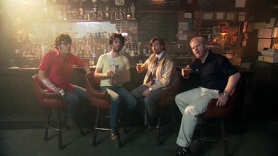
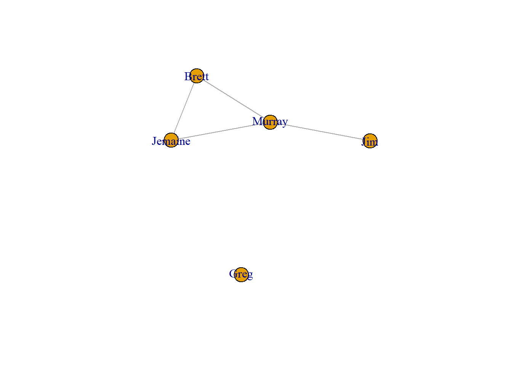

library(igraph)2 What is a Network?
One of our favorite TV shows is “Flight of the Conchords,” which was a sitcom about a New Zealand folk-rock band living in New York City. Below I will generate a network graph from the friendships shown in season 2 episode 4, “Murray Takes it to the Next Level.” Here’s a picture of the guys from that episode.

To begin with, I will load the igraph package into the library. If this is your first time using igraph, you will have to install it first by typing install.packages(“igraph”).
2.0.1 Networks as Edgelists
A network is a series of dots or points in a graph, along with a series of lines that connect those dots. In social network analysis, the dots are often considered to be people, but they could also refer to various products of people, like books or corporations or events. The lines represent relationships. Often we are speaking of friendships, but they could represent marriages or mergers or memberships. Throughout the book, we will refer to the dots interchangeably as nodes or vertices and the lines as edges.
Now let’s make a network. One easy way to do so is to create an edgelist, which shows a set of relationships between pairs of nodes in a network. The code below uses the make_graph function to create an igraph object. Each pair indicates a friendship. The first pair is “Brett”,“Jemaine”, so that means these two individuals are friends.
Note also the “directed = FALSE” option. We need to include this option because while this is an undirected network, sometimes the lines in a graph are directed. For example, Brett might say that Jemaine is his friend, but Jemaine might not say that Brett is his friend. In that case, the graph would include a line from Brett to Jemaine, but no line from Jemaine to Brett. In the current case, we will treat this relationship as undirected (thus, “directed = FALSE”) and assume that any friendship is reciprocated.
conchords <- make_graph(edges=c("Brett","Jemaine",
"Brett","Murray",
"Jemaine","Murray",
"Murray","Jim",
"Greg","Greg"), directed = FALSE)You may have noticed that the last line show a tie between Greg and himself. We included this because Greg is actually an isolate with no friends. (Sorry, Greg.) If we don’t include this self-tie (called a loop), then Greg won’t be included as a node in the network. To appropriately include Greg as an isolate, we can “simplify” the graph to remove the loop.
conchords <- simplify(conchords,
remove.loops = TRUE)2.0.2 Networks as Graphs
Now let’s plot out the network. For now, we will use R’s base plot function. In the next chapter we can work with ggraph to develop more detailed visualizations.
plot(conchords)
These visualizations are referred to as network graphs or sociograms. They show all of the nodes and the lines that connect them. When we focus on a single node, we refer to that node as ego and all of the people connected to ego as their alters. A few elements of this network are important to point out.
- Murray has lots of friends. He is connected to Jim, Jemaine, and Brett. That means he has a degree of 3.
- Greg has no friends. We refer to him as an isolate.
- Jim only has one friend (Murray). In this network, he is a pendant.
- Murray, Jemaine, and Brett form a clique. A clique is a subgroup in which all people are connected to one another.
2.0.3 Network density
Another important feature of networks is their density. Mathematically, density is the proportion of ties present in the graph divided by all possible ties. An empty graph is when there are no ties between individuals in the network, which results in a density score of zero. A complete graph is when all possible ties are present, which results in a density score of one.
This network contains 4 ties. The number of possible ties in this network is calculated as (n*(n-1))/2, with n referring to the number of vertices. This translates to (5*(5-1))/2, or (5*4)/2, or 20/2, which equals 10. Therefore, the density of this network is equal to 4/10 = 0.4. This tells us that 40 percent of the total possible ties are present in this network. We can check this result below by using the density command from igraph to estimate this for us.
4/(5*(5-1)/2)[1] 0.4edge_density(conchords)[1] 0.4Remember that this is a undirected network. If this was a directed network, density would be calculated differently. That’s because each pair of nodes (or dyads) would have the potential for two ties rather than just one (with each node potentially nominating the other as a friend). That effectively doubles the potential ties for the network. In that case, the denominator (all possible ties) for the density equation is n*(n-1), without being divided by 2 afterward.
Let’s illustrate this by constructing a directed network. In the show, Murray asks Greg if he thinks they are friends. Greg says, “I like to think so, Murray.” To this, Murray responds: “We’re not. We’re workmates.” We can take this as evidence that Greg nominates Murray as a friend (or sends Murray a directed friendship tie), whereas Murray does not nominate Greg as a friend. Armed with this information, let’s recreate the network as directed, with all ties reciprocated except for the Greg to Murray friendship. (Note that we don’t need to simplify this network because there are no more loops. Greg is incorporated into the network by virtue of his directed tie to Murray.)
conchords_dir <- make_graph(edges=c("Brett","Jemaine",
"Jemaine","Brett",
"Brett","Murray",
"Murray","Brett",
"Jemaine","Murray",
"Murray","Jemaine",
"Murray","Jim",
"Jim","Murray",
"Greg","Murray"), directed = TRUE)This network contains 9 ties. The total possible ties is n*(n-1), or 20. 9 divided by 20 is equal to 0.45. Let’s check our work.
9/(5*(5-1))[1] 0.45edge_density(conchords_dir)[1] 0.452.1 igraph objects
Now let’s examine the elements of the igraph object we created for the undirected conchords network.
conchordsIGRAPH 362cb31 UN-- 5 4 --
+ attr: name (v/c)
+ edges from 362cb31 (vertex names):
[1] Brett --Jemaine Brett --Murray Jemaine--Murray Murray --Jim Right away we can see important information on the top line. This is an IGRAPH object. The “UN” tells us this is an undirected network. The 5 and 4 indicate that there are 5 nodes and 4 edges (remember, we removed the loop, so it’s only 4 edges).
The second line lists the attributes. The only attribute is name. In the parenthesis after name, the “v” tells us this is a vertex attribute. This makes sense because each name is a characteristic of a node. To examine an attribute, we can use the following code. This is similar to the way one might request information from a variable in a data frame, which is done by naming the data frame, followed by the dollar sign ($), and then naming the variable. In this case, the call is preceded by a “V” to indicate that we are requesting a vertex attribute.
V(conchords)$name[1] "Brett" "Jemaine" "Murray" "Jim" "Greg" And here we see a list of all of the nodes or vertices in the graph. It is also possible to have edge attributes, though we don’t have any edge attributes here.
Let’s compare this network to the directed version.
conchords_dirIGRAPH 364807a DN-- 5 9 --
+ attr: name (v/c)
+ edges from 364807a (vertex names):
[1] Brett ->Jemaine Jemaine->Brett Brett ->Murray Murray ->Brett
[5] Jemaine->Murray Murray ->Jemaine Murray ->Jim Jim ->Murray
[9] Greg ->Murray This object tells us that the network is directed (“DN”) and still contains the same number of vertices (5), but has more ties (9) because it includes reciprocated friendships plus Greg’s unreciprocated tie. Note, too, that the list of edges shows the direction of the friendship nominations represented by arrows (“->”) between each dyad. In the undirected network, the edges were separated by “–”.
2.1.1 Networks as Matrices
Networks can also be presented as matrices. We can view the matrix for this network by applying the as.matrix command to the conchords object.
as.matrix(conchords)5 x 5 sparse Matrix of class "dgCMatrix"
Brett Jemaine Murray Jim Greg
Brett . 1 1 . .
Jemaine 1 . 1 . .
Murray 1 1 . 1 .
Jim . . 1 . .
Greg . . . . .This matrix has 5 rows and 5 columns, each representing the 5 nodes in the network. The values represented in the matrix show whether or not a friendship exists. At row 1 (Brett) and column 2 (Jemaine), we see a value of 1, which indicates that Brett and Jemaine are friends. When a “.” is present, this means there is no relationship between the two individuals. We tend to refer to these cells by their row number and then their column number. Therefore, cell (4,3) refers to the relationship between Jim and Murray, in which we find a value of 1 meaning that they are indeed friends.
The diagonal in the matrix includes all of the cells where the row number and the column number are the same: (1,1), (2,2), (3,3), (4,4), and (5,5). These are the loops – the ties between the person and themselves. Loops are rarely meaningful in social network analysis so that are not often examined.
Because this is an undirected network, the values on the bottom left (below the diagonal) are mirrored on the upper right (above the diagonal). For example, the value for (2,1) is the same as (1,2).
Now let’s contrast this matrix with the directed version.
as.matrix(conchords_dir)5 x 5 sparse Matrix of class "dgCMatrix"
Brett Jemaine Murray Jim Greg
Brett . 1 1 . .
Jemaine 1 . 1 . .
Murray 1 1 . 1 .
Jim . . 1 . .
Greg . . 1 . .In a directed network, the row values are read as send ties and the column values as received ties. In that sense, the value of 1 in (2,1) tells us that Jemaine sends a friendship nomination to Brett, or that Brett receives a friendship nomination from Jemaine. Alternatively, the value of 1 in (1,2) tells us that Brett sends a friendship nomination to Jemaine, or that Jemaine receives a friendship nomination from Brett.
This directed matrix is identical to the undirected version, except for one detail: it includes the directed tie from Greg to Murray (5,3). Murray does not return this friendship, so the corresponding reciprocal tie (3,5) above the diagonal is not present.
2.1.2 Binary vs. Valued Matrices
The “.” values are essentially zeros in the matrix. In this way, we can consider this matrix to be a binary matrix as it contains only zeros or ones. Binary networks such as these only indicate whether or not a friendship exists. Valued matrices (or weighted matrices) would include other numbers as well. For example, we might want to give best friend relationships a value of 2 instead of a 1 to indicate a stronger friendship.
In the show, Brett and Jemaine are best friends and so are Murray and Jim. So let’s create a new edge attribute to distinguish best friend from friend relationships. We will assign new values to the edges. Note that we need to follow the exact sequence as they are listed in the conchords object. Let’s examine that again.
conchordsIGRAPH 362cb31 UN-- 5 4 --
+ attr: name (v/c)
+ edges from 362cb31 (vertex names):
[1] Brett --Jemaine Brett --Murray Jemaine--Murray Murray --Jim The first edge (Brett – Jemaine) and the last edge (Murray – Jim) are the best friend relationships. So we will create a new numerical vector to assign the appropriate weights to the edges.
E(conchords)$weight <- c(2, 1, 1, 2)
conchordsIGRAPH 362cb31 UNW- 5 4 --
+ attr: name (v/c), weight (e/n)
+ edges from 362cb31 (vertex names):
[1] Brett --Jemaine Brett --Murray Jemaine--Murray Murray --Jim Now we can see that our new weight variable is listed as an edge attribute. Now let’s view the matrix again.
as.matrix(conchords)5 x 5 sparse Matrix of class "dgCMatrix"
Brett Jemaine Murray Jim Greg
Brett . 1 1 . .
Jemaine 1 . 1 . .
Murray 1 1 . 1 .
Jim . . 1 . .
Greg . . . . .Hmm…this does not show the new values, only the binary ones. We have to extract the matrix using an igraph function and include an option to apply the weighted values.
as_adjacency_matrix(conchords, attr = "weight")5 x 5 sparse Matrix of class "dgCMatrix"
Brett Jemaine Murray Jim Greg
Brett . 2 1 . .
Jemaine 2 . 1 . .
Murray 1 1 . 2 .
Jim . . 2 . .
Greg . . . . .Now we can see the weighted values that indicate best friends.
Note that that command used here called this an adjacency matrix. That’s because this is a one mode network that shows the extent to which a single set of vertices is adjacent to one another. Later in the book we will discuss two mode networks that show the relationships between two different sets of nodes. For example, imagine we are interested in connections between people and the voluntary organizations they are involved in. The corresponding incidence matrix would list the people along the rows, the organizations along the columns, and the cells would show which people belong to which organizations. For the time being, we can set aside the idea of two mode networks and focus only on one mode networks.
2.1.3 Creating a Graph from an Adjacency Matrix and a Data Frame
Earlier we demonstrated how to create an igraph object from an edgelist. However, you might have network data in other formats. For example, how can we create an igraph object by starting with an adjacency matrix? Below we will extract the adjacency matrix from the conchords network and then use the graph_from_adjacency_matrix command to create a new (duplicated) igraph object. We need to point out the adjacency matrix object and indicate whether the graph is directed or undirected, as well as if it is weighted or not.
conchord_mat <- as_adjacency_matrix(conchords, attr = "weight")
conchord2 <- graph_from_adjacency_matrix(
adjmatrix = conchord_mat,
mode = "undirected",
weighted = TRUE)
conchord2IGRAPH 36bfc49 UNW- 5 4 --
+ attr: name (v/c), weight (e/n)
+ edges from 36bfc49 (vertex names):
[1] Brett --Jemaine Brett --Murray Jemaine--Murray Murray --Jim Here you can see that the conchord igraph object was effectively duplicated.
Finally, you might have network data in the form of data frames, which are data matrices that include a set of cases in the rows and variables in the columns. There are two main pieces of network information that could be contained in a data frame: 1) the vertex attributes and 2) the edge attributes.
Let’s create two separate data frames with this information for the conchords network, starting with the vertex attributes. In the code below, we include the names of the people in the network, plus let’s add two other attributes. In the show, Brett and Jemaine are both musicians, so we will give them a value of 1 for a musician variable. Also, Brett, Jemaine, and Murray are originally from New Zealand, so they will receive a value of 1 for a nz variable.
vertex_df <- as.data.frame(V(conchords)$name)
colnames(vertex_df) <- c("name")
vertex_df$musician <- c(1,1,0,0,0)
vertex_df$nz <- c(1,1,1,0,0)
vertex_df name musician nz
1 Brett 1 1
2 Jemaine 1 1
3 Murray 0 1
4 Jim 0 0
5 Greg 0 0Next let’s create the edge attribute data frame. The first line of the code below extracts the edgelist and creates a data frame. That data frame contains two columns, one for each of the two people who are linked. We then change the column names to indicate that the first person as the sender of the tie and the second column as the receiver of the tie. Remember that we are treating this network as undirected, which means that all ties are reciprocated. So in that sense we don’t have a clear sender or receiver, but still we need these specific column headings in order to convert the data frame to an igraph object later.
The third line of the code assigns the weight of the tie to a separate column called “weight.” Then we can view the data frame.
edge_df <- as.data.frame(as_edgelist(conchords))
colnames(edge_df) <- c("from","to")
edge_df$weight <- E(conchords)$weight
edge_df from to weight
1 Brett Jemaine 2
2 Brett Murray 1
3 Jemaine Murray 1
4 Murray Jim 2Using these two data frames, we can create a new igraph object. We first need to assign the edge_df as “d”, then indicate that those edges are undirected, and finally add the vertex attributes.
conchord3 <- graph_from_data_frame(
d = edge_df,
directed = FALSE,
vertices = vertex_df)
conchord3IGRAPH 36ce1dd UNW- 5 4 --
+ attr: name (v/c), musician (v/n), nz (v/n), weight (e/n)
+ edges from 36ce1dd (vertex names):
[1] Brett --Jemaine Brett --Murray Jemaine--Murray Murray --Jim As you can see, this creates a new igraph object named conchord3. This object is the same as the earlier ones we created, except that it now includes new vertex attributes for musician and for New Zealand.
In addition to covering basic terminology, this chapter showed how to view networks in different formats (as an edgelist, as a graph, and as a matrix), how to identify and manipulate igraph objects, and how to create igraph objects from different starting points (an edgelist, an adjacency matrix, and a data frame). The next chapter will get into more details about visualizing igraph networks in ggraph.
And if we have piqued your interest about the Flight of the Conchords, you can learn more about the show here.